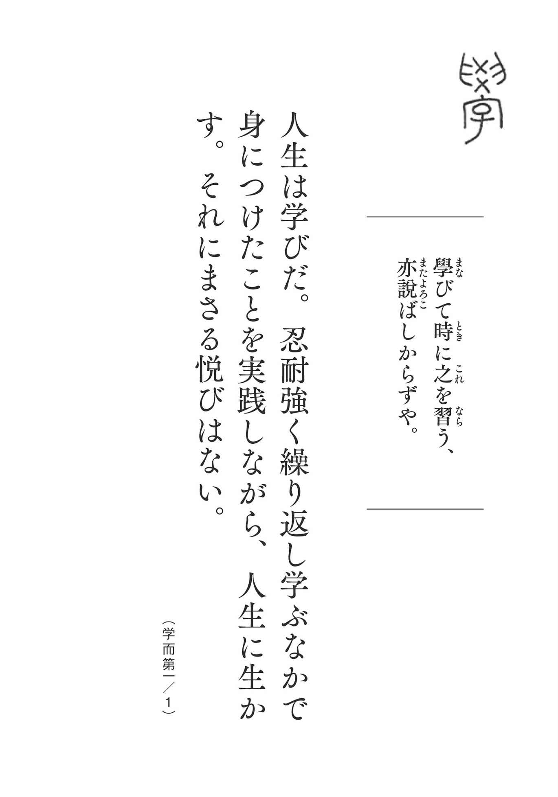
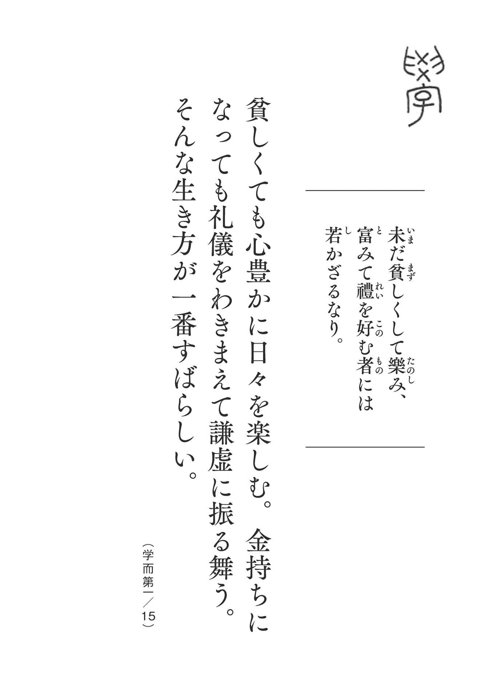

| 中国古典と言えば「この3冊」『論語』『孫子』『老子』超訳シリーズ【ダイジェスト版】 (知的いきかた文庫) | |
| 田口 佳史 | |
| 三笠書房 (2018) | |
この本は縦書きでレイアウトされています。
また、ご覧になる機種により、表示の差が認められることがあります。
三笠書房
超訳 論語 「人生巧者」はみな孔子に学ぶ
田口佳史
はじめに
人間の本質をえぐる稀代の書
「いつ読んでも、どこから読んでも、生きる道 標 となる言葉にぶつかる」
論語を読むたびに、私は感動を新たにする。
なぜなら、生きていくうえで一番大切な問題――「人間とは何か」について鋭く切り込み、一人ひとりの人間が内包するさまざまな要素を余すところなく描き切っているからだ。
「人間の本質をえぐる稀代の書」といっていい。
人生とは、たとえるなら人の往来が激しいスクランブル交差点を渡るようなもの。四方八方から非常にたくさんの人が押し寄せるように、人生でもさまざまな出来事に次から次へと遭遇する。
そういうときに無策だと、あっちにぶつかり、こっちにぶつかり、最悪の場合は転んでケガをするなどして、なかなか〝向こう岸〟に渡れない。
どうすれば少しでも早く、目標地点に到達できるか。そのためには、向かってくる人々の心情や動きを観察し、また起こりうる出来事を予測しながら進んでいく必要がある。
論語はその指南書であり、〝転ばぬ杖〟となって私たちを導いてくれる。
いかに障害を察知して行動するか。
いかに諍 いを起こさずに、いい人間関係を築いていくか。
いかに状況に左右されず、常に心穏やかに豊かに暮らしていくか。
いかに立派な人間に成長していくか。
論語の言葉は、人生のありとあらゆる場面に応じて、適切な、心に響くヒントを与えてくれる。まさに「打てば響く」ように、いい言葉が返ってくる のだ。
ではなぜ、孔子は〝人生の達人〟になりえたのか。二千五百年以上経ったいまにも通用する教えを、私たちに授けることができるのか。
それは、孔子自身が貧しい生まれで、大変な苦労をした人物だからだ。
学びに目覚めたのは、ようやく十五歳くらいのこと。そこから学んで、学んで、学び続けた。なかなか政府の要職につけないなど、数々の辛酸をなめながら、道をはずれることなく生き抜いた。そして後世に、釈迦、ソクラテスと並ぶ「世界の三大聖人」とまで讃 えられる存在になった。
だから、孔子は大変なリアリスト である。社会のなかにいながらにして社会を観て、「現状を少し改善すればいい。もっと生きやすくなるし、人間関係ももっとスムーズにいく」と助言する。
私は経営アドバイザーとして、これまで二千社を超える企業の指導を行なってきたが、「論語を軸にした仕事論・人生論を説いてほしい」という要望は非常に多い。それだけ、現代のビジネスパーソンにとって有用な教えが詰まっている ということだろう。
また論語で特筆すべきは、自己向上を目指す人に天井知らずで生きる知恵を授けてくれる書である、ということだ。論語全篇に込められた孔子のメッセージは、
「向上心を持ち続けなさい。そうすれば、よりよい人生も、立身出世も、ビジネスの成功も、結果として手に入る」
ということである。
人生の指針となるような教え、座右の銘となるような言葉が満載なので、孔子があなたに直接語りかけていると思って読んでいただきたい。
本書は「学 而 」に始まり、「為 政 」「八 佾 」「里 仁 」「公 冶 長 」「雍 也 」「述 而 」「泰 伯 」「子 罕 」「郷 党 」「先 進 」「顔 淵 」「子 路 」「憲 問 」「衛 霊 公 」「季 氏 」「陽 貨 」「微 子 」「子 張 」「堯 曰 」と続く、全二十篇のなかから、選りすぐった論語を超訳した。〝通読感〟を楽しむとともに、一つひとつの言葉を味わい尽くしてほしい。
大きく打てば、大きく響く。論語は真剣に読めば読むほど、見返りが大きくなることを請け合おう。
田口佳史
為政第二
賢い人の考え方、愚かな人の考え方
上司は〝指針〟であれ
アドバイスの「選り好み」はしない
「ルールで縛る組織」は失敗する
「自立」せよ！
「天命」とは何か
人生の成功は「老境」に表れる
親には「上機嫌」で接する
古典は「血肉」となるまで読み込む
「開かれた人間関係」をつくる
「学ぶ」と「考える」のサイクルを回す
「知識の棚卸し」をする
発言に重みを持たせる
「まっすぐな人」を重用せよ
「言行一致」が信頼の鍵
誰かのために働いている人は、美しい
八佾第三
もっと「器の大きな人」になる
偉くなっても〝分をわきまえる〟
本物の教養、はりぼての教養
立派な人間は「争うところがない」
自分の言葉に「責任」を持つ
それは〝礼儀〟か〝おべっか〟か
「感謝」が理想的な上下関係をつくる
ミスには寛大に、手柄にはちょっと厳しく
里仁第四
結局、「仁」とは何なのか？
家庭生活がそのまま社会生活に出る
「仁者たるべし」にゴールはない
富貴か貧賤かは「自分の行ない」しだい
人生で成し遂げるべき二つのこと
外面志向から内面志向へ――人生好転の秘訣
「色眼鏡」をはずして評価する
人は「理念」で集める
自分の力不足なら自分で克服できる
当たり前のことを当たり前にやる
後進の心得
「陰陽のバランスを取る」という考え方
多くの人と寄り添って生きる

公冶長第五
それは「道理」にかなっているか
人物評は「自分の目」を信じよ
「乱れた社会」から身を引く、という知恵
「環境に恵まれない」という人たちへ――
「弁才」など二の次である
「やる気」がなければ話にならぬ
〝なびかない人〟が一番強い
「志」はあなたのすぐそばにある
雍也第六
人生、「楽しむこと」にまさるものなし
学びから得られる二つのメリット
あなたを見ている人が必ずいる
貧乏など怖くない
「いま、お前は自分自身を見限った」
「たまたまです」とさらりという
「聞く耳」を持つ
仕事の最高到達点は〝楽しむ〟こと
「挑戦欲」を燃やす
「本質」にも「流行」にもアプローチする
「他者のサポート」に心を砕く
述而第七
十年後、明るい未来が待っている人
迷ったら、「歴史」に訊け
心を鍛える「陰陽トレーニング」
もっと「美意識」を磨け
会うべきは「同年代のすごい人」
悲観的に準備し、楽観的に行動する
「十年後の自分」で勝負
「気がついたら老いて死を迎えた」
「確かなもの」だけを信じる
友だちは選ばなくてよい。なぜなら――
せこく立ち回らない
泰伯第八
「自己向上」に終わりはない
善行は人知れずやるもの
「品格」が悪意のある人を遠ざける
「大事なものを託される人」を目指せ
「体」は休ませども「頭」は休ませず
「納得させる」ことが上司の責務
「飽くなき探究心」を育てる
子罕第九
あなたは必ず変わることができる
執着を捨てる四つのポイント
その苦労は〝必ず〟生きる
人生は短い――孔子の「無常観」
「恋愛」は徳を磨くきっかけに
「あと一％の努力」ができるか
「若者」からもどんどん学ぶ
不遇のときこそ、力強く生きる
自分のなかの「根っこ」に気づく
必要なのは「強い思い」だけ
郷党第十
振る舞いには「すべて」が表れる
新人の心得
休んでいるときも、だらけない
食べ方、持ち方、歩き方......一つひとつを丁寧に
時機に乗じる
先進第十一
いつも慎重であれ、丁寧であれ
慎重に「言葉を選ぶ」
部下を「わが子」のごとくかわいがる
「いま」を全力で生きる
話の核心をつく
なぜ、「規範」が必要なのか？
「行動」から人格を観る
上司と部下は「運命共同体」
口達者はなぜ信用ならぬか
顔淵第十二
〝克己復礼〟の輪を広げていく
〝よくない自分〟を制御する言葉
自分が変われば、周囲も変わる
〝悪の発信者〟にならない
「受け手の気持ち」を最優先すべし
心から〝やましさ〟を排除していく
「血」よりも濃い人間関係を持つ
「理不尽」を回避する方法
「信頼」だけは絶対手放すな
自分の「役割」を果たす
人の「過去の汚点」は許容する
〝上司風〟ではなく〝君子風〟を吹かす
楽なほうへ行く自分に「待った」をかける
指摘すべきとき、見守るべきとき
友と「教養」を高め合う

子路第十三
人を動かす極意
リーダーは背中で語れ
人材を周囲に発掘してもらう法
自分の「職責」を確認してみる
「教える義務」を果たしているか
目の前の「一」より未来の「十」を取れ
「自らを恥じる」習慣をつける
最強の集団構築法
「簡単に喜ばない上司」になれ
「平常心」が大人物と小人物を分ける
「一人前の社会人」を育てる
「戦い方」を教えているか
憲問第十四
「道」を踏み外さないために
売上至上主義、というリスク
「地位」が上がるごとに「私欲」を減らせ
敗者が復活できる社会にする
「上達」する人、「下達」する人
「学歴信仰」から脱却せよ
「越権行為」をしてはいけない
「自慢はみっともないからやめなさい」
「あこがれの人」に近づけているか
まずは風格、能力は二の次
「公平な視点」で世の中を観る
自分を修め、人を治める
衛霊公第十五
人生には「責任」がつきまとう
「言忠信」で人を束ねる
相手に応じて話題を選ぶ
「先」を見通しつつ「いま」に集中する
「寛容力」を磨く
「ひらめき」は問題意識から生まれる
〝お山の大将〟になるな
「心眼」を備える
できるリーダーの「大局観」
〝そうだの輪〟を疑え
心まで貧しくしない
「やりたいかどうか」を判断基準に
人間はいかようにも変われる
ともに仕事をする価値がある人、ない人
季氏第十六
ここを戒めよ！
「良友」「悪友」には三種類ある
立場をわきまえる
青年期、壮年期、老年期――それぞれ注意すべきこと
絶対ないがしろにしてはいけないこと
人間のランクはここで決まる
リーダーは「九思」を習慣化せよ
「悪行」すらも手本とする
陽貨第十七
人の天性には差がない
人生は「習慣」で変わる
行動規範にすべき「五つの漢字」
美徳も過ぎれば悪徳になる
〝いい人〟には注意が必要
〝情報の横流し〟はやめる
「あんな親不孝者はいないね」
「食」へのこだわりを減らす
「やる勇気」と「やらない勇気」
話の通じない人とはつき合わない
微子第十八
こんな国、社会、組織にするな
こんなダメなトップはすぐに見限れ
部下を簡単に切ってはいけない
子張第十九
改めるべきこと、改めざるべきこと
〝もらい慣れ〟するな
組織は〝ボトムアップ型〟が基本
「学びノート」をつける
生きる道が見えてくる四つのポイント
「知的生産」で事を成す
ミスが多い人、少ない人
大人物かどうかを見分ける三つのポイント
信頼があるから「言葉」が届く
孔子の「失敗学」
堯曰第二十
論語の精神、ここにきわまれり
リーダーに求められる五つの任務とバランス感覚
絶対にやってはいけない「四つの悪徳」
「知命・知礼・知言」――論語の最後の言葉
本文内の書き下しはすべて『新釈漢文大系〈１〉論語』（明治書院）』を出典としています。
本文偶数ページの算用数字は右の出典に付されている通し番号です。
編集協力◎千葉潤子／岩下賢作
登場人物
孔
子
.........春秋時代末期の思想家。儒家の始祖
孔子と弟子たちの言行をまとめたものが『論語』
曾 子 .........孔子の弟子
子 貢 .........孔子の弟子
子張 .........孔子の弟子
桓 公 .........魯 国の君主
王 孫 賈 ......衛 国の大夫
公冶長 ......孔子の弟子
子 賤 .........孔子の弟子
冉 雍 .........孔子の弟子。仲 弓 ともいう
宰 予 .........孔子の弟子。宰 我 ともいう
申 棖 .........孔子の弟子
顔 回 .........孔子の弟子。顔 淵 ともいう
孟 之 反 ......魯国の大夫
子 路 .........孔子の弟子
季 歴 .........殷 王朝の首長
泰 伯 .........季歴の兄
虞仲 .........季歴の兄
文 王 .........季歴の子。周 王朝の基礎をつくった君主
武 王 .........文王の子。周王朝の創始者
孟 敬 子 ......魯国の大夫
南 容 .........孔子の弟子
閔 子 騫 ......孔子の弟子
陽 虎 .........魯国の政治家。陽 貨 ともいう
子 羔 .........孔子の弟子
司馬牛 ......孔子の弟子
子 夏 .........孔子の弟子
孟 荘 子 ......魯国の大夫

知識・技術を身につける唯一の方法
もしあなたが学ぶことを「おもしろくない」「苦痛なだけだ」と感じているとしたら、それは「学んだことを人生に生かそう」という意識が薄いからだ。いうなれば「学びっ放し」。せっかく得た知識も行き場を失う。そこに「悦び」があるはずはない。
学びで大切なのは、何度も繰り返し「習う」こと。「習」の字は「羽」に「白」と書く。これは、まだ羽の色づいていない幼い鳥が、命がけで何万回と飛ぶ訓練をする様を表す。反復練習こそが知識・技能を習得する唯一の方法であることを表している。
「習う」といっても、単に同じことを繰り返し学ぶだけではない。その学びのなかで得たものを、人生のさまざまな場面で何度も何度も忍耐強く実践することが眼目だ。そうして学びが人生に生かされて初めて、「学びの悦び」を嚙みしめることができる。
この論語を英訳すると、
「Is it not pleasant to learn with a constant perseverance and application?」
忍耐強く学び実践することをおいてほかに悦びはない のである。
友と「忘年・忘形の交流」を楽しむ
同窓会などで何十年ぶりかで友人と顔を合わせたとき、一瞬にして互いを隔てていた時間や距離が吹き飛ぶものだ。それほどに、机を並べて学んだ友や、志を同じくして語り合った友、一つのことにいっしょになって夢中で取り組んだ友、若いがゆえに暴走して赤っ恥をかき合った友との結びつきは強い。
忘年、忘形――年齢も世間的な地位・肩書も、いまある状況とは関係なく、互いがまだ何者でもなかった昔に戻れる。同期にはそんなよさがある。
しかし、これは何も同期に限ったことではない。学びの前では、誰もが平等、公平。 私の講義に集う生徒たちは、下は高校生から上は八十歳まで、みんなが「忘年・忘形の交流」を楽しむ友である。
そういう「人生の掛け値なしの友人」が不意に訪ねてきたら、孔子は「何をおいても、無条件に歓待しなさい」といっている。彼らとともに過ごす時間ほど貴重なひとときはないのだから。
全エネルギーを「自己向上」のために
ビジネスパーソンの多くが、周囲に評価されたい、自分の能力を認めてもらいたい、という一心で学び、仕事をしているのではないだろうか。だから思い通りにいかないと、大きく落ち込み、悩んでしまうのだ。
しかし、それは間違い。「人は誰のためでもない、自分のために学ばなければいけない」 と孔子はいう。学びの本質をズバリ、いい表した言葉である。
「自分のため」といっても、自分が出世したり、たくさんお金を儲けたりすることを目的とするわけではない。ただひたすら立派な人間になることを目指して自身を向上させ、その能力を世のため人のために発揮することにつなげる。自己中心的どころか、利他的な考え方があっての「自分のための学び」である。
評価されないことを怨んだり、自分の能力をアピールしたりすると、自分の持てるエネルギーが外側に向けて浪費されてしまう。そうではなく、持てるエネルギーはすべて自分の内側に注ぎ、自己向上のために使うことこそが大切なのだ。
「心の状態」に注意せよ
企業スキャンダルが相次ぐ昨今、記者会見などでよく聞かれるのが、「これからはコンプライアンスの検証・強化に努めてまいります」という言葉だ。
あたかも法令や社会規範、企業倫理がきちんと守られていないから、不祥事が起きたといわんばかりである。
そうだろうか。孔子はコンプライアンス以前の問題として、「社員の心が乱れているからではないのか」と問いかける。「何よりもまず、社員がどういう気持ちから不祥事を起こしてしまったのかを問え」と、社会秩序の根本を「人の心」に据えているのだ。
このくだりで「親孝行で、年上の者を敬う心のある人は、社会の秩序を乱すことは少ない」としているように、秩序を整えるためにもっとも重要なのは、礼にかなった行動を取る心である。
上に立つ者はだから、常に「部下の心を問う」ことを心がけたい。 「成果をあげろ」などと号令をかける前に、部下がどういう心で働いているかを見極める必要がある。

問題の「本質」を見極める
大変なトラブルが起きたとき、人は誰しもちょっとしたパニックに陥 るものだ。結果、頭が真っ白になって何も手につかない。目についた問題に次々と手を出して、収拾がつかなくなる。あるいは自分の評価を落とすまいと、責任逃れや事実の隠 蔽 に走る。いずれにせよ、ろくなことにならない。
そのいい例が、三・一一の原発事故の際に政府が取った対応だろう。根本はなんとしてでもメルトダウンを起こさせないことにあったのに、指揮官が目の前で起こる現象の枝 葉 末 節 に振り回されたばかりに最悪の事態を招いてしまった。
大きなトラブルに見舞われたときほど大事なのは、根本に立ち返って、冷静に事態を把握し、問題の本質を見極める ことだ。そうすれば、道理・道義が見えてきて、どう対応するのが一番いいかを考えたうえで行動することが可能になる。
枝葉末節にこだわらずに根本を見つめ、道理にかなった最善の策を講じる。それができて初めて、悪い方向への流れを断ち切り、いい流れを生み出すことができるのだ。
本物か偽者かはここでわかる
私は教師を養成する仕事に関わる際、必ずトイレ掃除をやらせるようにしている。その様子を見るだけで、その人がどの程度の人物なのかがわかるからだ。
なかなかできた人物だと感心する人は、こんなふうに掃除をする。まず上着を脱いで腕まくりをし、やにわに便器にゴム手袋をつけた手を突っ込み、きれいに洗い上げる。次に、這いつくばって、雑巾で床を隅々まで拭く。
簡単なことだが、ここまでやる人は少ない。たいていは身支度も整えず、便器をブラシで軽くこすり、床をなでるようにモップをかけて、おしまいにしようとする。そういう姿を見ると、「巧言令色、鮮いかな仁とはよくいったもの。上っ面だけきれいにしてヨシとするなど、大した人物ではないな」とガッカリする。
「仁」が意味することの一つは、真心を込めて誠心誠意、物事に取り組むこと。 トイレ掃除のような、誰もがいやがる仕事をやらせてみると、やるべき仕事に対してどのくらい覚悟を決めているかが如実に見てとれる。
「自責」に徹した生き方を
私は三十代でうまくいかない苦労、四十代でうまくいき過ぎた苦労を味わった。いずれの場合も、とうとう行き詰まったある日、朝から晩まで喫茶店にこもり、「なぜこうなったのか」を紙に書き出し、とことん考え抜いた。
最初のうちは「誰々が悪い、時代が悪い、社会が悪い」と他者を責める言葉のオンパレードだったが、やがて「それは違う」と気づいた。すべては自分が引き起こしたこと。「他責」にすること自体が自分の弱点であることに思い至った。そういう視点を得たとき、挽回策が見えてきた。他者に対する妬み、嫉 み、怒り、傲慢などのよくない感情をなくし、「私」を主語にして行動しようと決めたのだ。
そうして「自責に徹した生き方」 に変えたときから、よくない感情が心に渦巻くことが減り、人生が好転した。
孔子の弟子である曾 子 の右の言葉通り、「三省」は毎日行なうにこしたことはない。向上心を錆 びつかせないためにも、励 行 されたし。
どんどん「新しいもの」を取り入れる
ベテランの域にさしかかる四十代、五十代になると、ガンコになっていく人が少なくない。これまで積み上げてきた実力や実績、経験をよりどころに、自分の考えを変えるのは屈辱だとばかりに、自分を押し通そうとする。
そんなふうでは、「あの人は結局、自分のやり方・考え方しか認めないんだから、何をいってもムダだ」と思われ、周囲の人たちは遠ざかる。情報も入らなくなってしまう。さらに経験を積んでいく道を自ら閉ざすことになるのだ。
学びは一生。いいかえればそれは、いくつになっても、さまざまな人の意見に耳を傾け、新しい情報をどんどん取り入れながら経験を積み上げていく ことである。ガンコになった瞬間に、枯木への道を歩むしかない。なんと寂しい人生か。
ベテランが目指すべきはガンコより剛 毅 。意志は強く物事に屈しないが、自分と異なる考え方に出合っても、ガンコにならず、そちらのほうがよいと判断すれば「それ、おもしろいね。やってみよう」といえるようでないといけない。
「最後に勝つ人」の絶対ルール
競争で重要なのは、勝つか、負けるかではない。むしろ、自分より優れた者、自分の能力ではまだ足りない難しい仕事にあえて挑戦し、負けることを経験したほうがいい。
なぜなら、負けることによって、自分には何が足りないか、自分の考え方・やり方のどこが間違っていたのかが明確になるからだ。そこがわかれば、自分を強化し、成長させていくことができる。
負けを繰り返すことで、しだいに将来の勝ちに近づいていく、 といってもいい。
だから、仕事で間違いがあったり、失敗をしたりしても、へこたれることはない。それを糧 に成長していこうと奮い立つことにこそ、競争の醍醐味があるのだ。
今日一日を「未来への糧」に
将来は過去の延長線上にある。先を見通すためには、過去を丹念に調べることも必要だ。しかし振り返ってばかりではしょうがない。「過去があるから、いまがある」と認識したうえで、さらに、
「今日は過去の終わりの日。しかも将来のスタートの日でもある」
と捉えてみてほしい。遠い将来のことを考える気持ちになるだろう。
そうして過去の延長線上にある将来を見据えて、人生計画を立てる。その瞬間、自分の人生の過去・現在・将来を結ぶハイウェイができる。それによって現在の窮状のなかで見失っていた、あるいは過去に置き去りにして忘れていた目標が見えてきて、いま何をなすべきかがわかる。
この視点を忘れずに生きていけば、先が見えずに思い悩むことはなくなるはずだ。
誰にでも礼儀正しく和やかに
「あの人に会うと、いつも不思議と和 やかな気持ちになれるんですよ」
周囲からそんなふうにいわれる人は、人との「和」を大切にしている。
そういう人は誰かと対立して争うこともないし、非礼・無礼な振る舞いをすることもない。孔子はそう諭している。
繰り返し「礼」について説く論語のなかで、ここは礼を他人に示すときの注意をいっているのだ。温かい心をもって、和やかに、心から示すべきが礼である。
「礼儀正しい」といっても、形式張っていて堅苦しい態度ではむしろ「慇 懃 無礼」になってしまう。和やかななかにも適度な折り目正しさを忘れないこともポイントである。
「すぐやる力」で成長する
やるべきことをつい先延ばしにする、というのはよくあることだ。やりたくないから、もしくは面倒だから、後回しにしたくなるのだろう。
そんなときは「事に敏！」と、自分に号令をかけるといい。やるべきことはすぐやると決めれば、仕事はどんどん片づく。その分だけ、多くの仕事ができるようになり、経験値も上がっていく。
とりわけよくないのは、わからないことを「後で調べよう」とすること。 何を調べるのかはすぐに忘れ去られ、「後で」はいっこうにやってこない。結果、わからないことをわからないまま放置することになる。
それは非常にもったいない。せっかくの学習の機会を放棄したに等しいではないか。いまはたいていのことなら、すぐにスマホで検索して調べることができるのだから、その機能を使わない手はない。調べる手間を惜しまないよう心がけたい。

「お金いらずの楽しみ」を見つけよ
ここで重要なのは、「貧しくして楽しむ」というところ。現代人は必要以上に貧しさをおそれ、日々を楽しく過ごすことのすばらしさに目を向けようとしない傾向がある。
では、どうすれば「貧しさを楽しむ」ことができるのか。江戸時代の儒学者、貝 原 益 軒 の書いた『養生訓』の一節に、そのヒントが提示されている。
「ひとり家に居て、閑 に日を送り、古書をよみ、古人の詩歌を吟 じ、香をたき、古法帖を玩 び、山水をのぞみ、月花をめで、草木を愛し、四時の好景を玩び、酒を微 酔 にのみ、園菜を煮るも、皆是 心を楽ましめ、気を養ふ助なり。貧賤の人も此 楽つねに得やすし。もしよく此楽をしれらば、富 貴 にして楽をしらざる人にまさるべし」
このように、お金をかけずとも、心が豊かになる楽しみごとはたくさんある。「今日は楽しかったね」と思える毎日を重ねられれば、貧しさは楽々乗り越えられる。
貧しさをおそれる暇があったら、心が豊かになる暮らし方をいろいろ工夫したほうがいい。人生の幸せにおそれは無用である。
「ひとり切磋琢磨」のすすめ
ここは、前段の孔子の言葉を受けて、弟子の子 貢 が語ったところ。『詩経』の教えを引いたことで、孔子は「わかってるじゃないか、君」と喜んでいる。先生の教えを先回りして受け答えをしたことを評価したのだ。「打てば響く」ような言葉が返ってくる生徒というのは、大変頼もしいものである。
それはさておき、ここで注目したいのは「切磋琢磨」という言葉。「切」はナイフで切り出すこと、「磋」はやすりなどで削ること、「琢」はのみで叩くこと、「磨」は砂などで磨くことを意味する。ようするに、こういった工程を経て玉や宝石が美しく磨かれてゆくことを表している。立派な原石も磨かなければ宝石にならない。
いまはおもに「ライバルが互いに励まし合いながら、知識や技術を磨いていく」ときに使うが、必ずしもライバルがいなくてもいい。学問や道徳に励んで人間性を育み、自分を美しく磨いていくこと自体が「切磋琢磨」 なのだ。どんな状況にあっても、「切磋琢磨」に生きる醍醐味を見出すことが大事である。
参考文献
『新釈漢文大系〈１〉論語』吉田賢抗／明治書院
三笠書房
超訳 孫子の兵法
「最後に勝つ人」の絶対ルール
田口佳史
「孫子の兵法」は、現代のビジネスパーソン必読の"実益書"
「強者になるには一定の法則がある」
これは、四十年以上、中国古典と向き合ってきた私が得た結論です。
二十五歳のときに出会った「老子」と「論語」。それを入口に、四書（大学・論語・孟子・中庸）五経（易経・書経・詩経・礼 記 ・春秋）から法家や「墨子」、「孫子・呉子・六 韜 ・三略」の兵法書、宋学・陽明学などの中国古典を読み、講義するようになりました。
私はこれら古典を研究対象としてというよりも、むしろ「人生のガイドブック」として読み、さらにそれをわかりやすく生徒に語ることをモットーに講義を続けてきました。
みなさんは、何かを求めて私の講義に来られるわけで、私はそれに何とか充分に応えなくてはいけない。これを毎日、四十年以上やってきたわけです。
そして気づいたのは、驚くべきことにこれらの古典は「人生全般」について述べている、ということ。抜け落ちが全くないのです。
したがって、それをほとんど毎日講義している私は、毎日人生を、生き方を学んでいるとも言えるのです。
実は、教えている私がもっとも得をしているのかもしれません。
「すごい実益書だ」
これが、私が中国古典に対して感じていることです。
そのなかでも、とりわけすごみのある実益書こそ「孫子の兵法」なのです。
ビジネスにも、人生にも応用できる「考え方と行ない方」が、とても具体的に説かれています。
欧米のビジネス・スクールでも「戦略書の原点」として取り上げられている、まさに現代最強のガイドブックなのです。
たとえば、ビジネスでは「相手より優位に立つ」ことが求められます。
このことは、本文でも詳しく述べますが、孫子は「人間関係は持ちつ持たれつ」なんて甘っちょろいことは言いません。「自分が優位に立って、思うように事を運べ」と言います。そして、その具体的な方法として、
「メリットを提供する」
「相手の痛いところをつく」
「得手・不得手を利用する」
......といった要点を挙げます。
このように、"きれいごと"ではない実用的なテクニックを孫子は説きます。
まさに、現代のビジネスパーソンが、「最後に必ず勝つ」ために絶対に読んでおくべき教えなのです。
さて、中国古典に触れてきた私が、いまどんなメリットを享受しているかご紹介しましょう。
まず私は、六十歳になってから、何とありがたいことに、愉快な人生がスタートを切り、十年経った現在も、ますますその愉快が強まっているのです。
六十歳といえば、ふつうは定年です。私の級友のなかには、それまでの会社エリートから一転、谷底を滑り落ちるかのように、雲泥の差の貧しい不愉快な人生になってしまった人もいるというのに。
よくよく考えてみると、いくつかの理由が考えられます。
まず、第一の理由。それは、前述のように、
「古典が私を救ってくれた」
ということ。
そして二つ目の理由、それは、
「二千社余りの会社が、人生の勝ち負けを教えてくれた」
ということ。
三十歳のときに創業してから今日まで、もう一つの私の本業は「経営のアドバイザー」です。携わったクライアント数は、官公庁や地方自治体、学校や医療機関なども入れると、その数は二千社に達すると思います。
つきあっていただいた経営者もその数だけいらっしゃいます。みなさん、いま振り返っても精力的で個性的な、魅力的な人物ばかりでした。
この会社と経営者とは、まさに真剣勝負でつきあいました。千差万別、実に多様な課題に取り組みました。ありがたいことです。
そして、こうした私のこれまでの人生の結集である願いは、この一言に尽きます。
「何とか幸せになって欲しい。愉快な人生を生きて欲しい」
これが、私が受講生や生徒の方々に抱く、いまの切なる願いなのです。
特に若い人々には、「より良い明日が待っているという日々を過ごしてもらいたい」と、心から願っているのです。
「そのためには、強くなってくれ。いかなるものにも打ち克 つ強者になってくれ」
これが、次に思うことです。
逃げていては、いつまでも不幸や不愉快は去っていかないのです。
「いつでも来い。そんなものに負ける自分ではない」
と、言える自分をつくることが、実は幸せへの一番の近道なのです。
そのためには、何をどのようにしたらいいのか。
それを教えるには、中国古典を、とりわけ「孫子の兵法」という比類なき人生戦略の書を借りてメッセージを伝えるのが最適ではないか。そうした考えのなかから生まれたのが、この本なのです。
田口佳史
「孫子の兵法」は、現代のビジネスパーソン必読の"実益書"
第一講 「計 篇」
最後に勝つ人は「この戦い方」を知っている
１ 人生をなめてはいけない
２ "出たとこ勝負"は敗者の戦い方
３ 「五つの視点」で勝利のシミュレーションを
４ 絶対負けたくない「ライバル」をつくれ
５ 悲観的に準備して、楽観的に行動する
６ 「勢い」をつくって、支援者を引き寄せる
７ 強い相手には「懐に飛び込む」
８ 「バカになれる人」になる
９ 常に「相手の優位に立つ」ことを考える
第二講 「作 戦 篇」
これからの時代を生き抜くための「武器」を持て
10 あなたは、何を武器に戦うか？
11 いち早く仕掛けて主導権を握る
12 「負けパターン」も頭に叩き込んでおく
13 不得意分野でムリして戦うな
14 他人が放っておけない人材になる
15 「ケンカ別れ」は愚の骨頂
16 ライバルさえも味方に取り込む
17 「一番」を狙っている人についてみよ
第三講 「謀 攻 篇」
「戦わずして勝つ」──これが「孫子」の鉄則
第四講 「形 篇」
思い通りにならない状況をいかに突破するか
24 「負けない自分」のつくり方
25 好機が来るのを焦らず待つ
26 最後に勝つ人の「感情の整理法」
27 「できて当たり前」がプロの仕事
28 「現場」には必ず「一番乗り」せよ
第五講 「勢 篇」
結局、一番強いのは「勢いに乗っている人」
29 整理整頓能力のある人は「頭が切れる」
30 戦い方の「バリエーション」を増やせ
31 「あきらめない人」が最後には勝つ
32 短期集中が「勢い」を生む
33 膠着状態になったら、あえて隙を見せる
34 危機感を「勢いのエネルギー」に変える
第六講 「虚 実 篇」
「主導権」を握って、ライバルを圧倒する
35 自分のペースで事を進める極意
36 競争相手の少ない分野を狙う
37 能力を「分散」してはならない
38 「ワンパターン」の恐ろしさを知る
39 相手の「本心」を徹底的に引き出す
40 「水面下の動き」も察知せよ
41 自分は「不死身」だと思え
第七講 「軍 争 篇」
頭を使った、「急がば回れ」の目標達成法
42 あらゆる手を使って「結果」を出す
43 「ムリ」を重ねると「不利」になる
44 「専門家」の知恵を活用する
45 「やるときはやる人」と見せつける
46 「仲間意識」を高める効果的な方法
47 朝・昼・夕で働き方を変えてみる
48 相手を「袋小路」に追い詰めない
第八講 「九 変 篇」
いつ、何が起きても「動じない人」になる極意
49 常に「身軽」でいる
50 何事も「現場重視」で判断せよ
51 いいことも、悪いことも、いつかは終わる
52 「来るなら来い」とドンと構える
53 「強みが弱みに変わる」五つのパターン
第九講 「行 軍 篇」
勝者と敗者を分ける「人生行路の歩き方」
54 人生、より高きを目指せ
55 問題を「外から見る」視点を持つ
56 逆境にあっては「心の支え」が必要
57 「不意打ち」されないように注意せよ
58 何事も「過ぎれば毒」と心得る
59 「うまい話」には気をつけろ
60 「アメとムチ」の人心掌握術
第十講 「地 形 篇」
「自分の置かれた状況」の正しい見極め方
61 「ライバルとの戦い方」六つの必勝パターン
62 負ける理由は必ず「自分」にある
63 上司と部下の「理想的な関係」とは？
64 「勝率」を上げるための「三つの鉄則」
第十一講 「九 地 篇」
勝利をより確実にするための「心の整理術」
65 状況に応じて「心構え」を変える
66 心の乱れが自滅を招く
67 相手の"聖域"をつく
68 冷徹に、でも感情豊かに
69 行動は常に「しなやかに、したたかに」
70 開示すべき情報と、隠すべき情報
71 リーダーは「しんがり」を行け
72 「利益」を明確に示せば、人は動く
第十二講 「火 攻 篇」
自分の「評価」「印象」を高めるテクニック
73 時代の風に乗せて「いいイメージ」を広げる
74 メディアをうまく活用する
第十三講 「用 間 篇」
孫子が教える「精度の高い情報」の集め方
75 「情報収集」に労を惜しむな
76 情報は「人」から取れ
77 「情報収集マン」を使いこなす
78 「あの人のためなら」と言われる人になれ
書き下し文一覧
編集協力──岩下賢作／千葉潤子
18 「連戦」してはならない
百 戦 百 勝 は、善の善なるものに非 ざるなり。
戦いにおいては、自分も相手も傷つかないように勝つことを考えなければならない。どちらが勝っても負けても、傷つけば疲弊し、回復に大変な時間と労力がかかるからだ。だから一番いい勝ち方は、戦わずに勝敗を決することなのである。
ふつうに考えれば、「百戦百勝」はこれ以上ないというくらい、すばらしいこと。でも、孫子は「そんなのはちっとも褒められたものではない。むしろ非常に危うい。なぜなら現実に戦ってしまったんだから」と言っています。
戦う以上、互いが無傷でいられることはまずありません。それは何も実際の戦争に限らず、ビジネスにおける戦いだって、日常の諍 い事だってそう。
一度争いを始めると、どうしたって互いに何らかの傷を負います。たとえ勝ったとしても、傷つけた相手の怨みを買います。「いつか仕返しをしてやる」と、新たな戦いの火種を植えつけることにもなります。
それに、勝ったほうだって、無傷というわけにはいきません。
壊滅的な打撃を被った敗戦国の戦後復興を担うのは戦勝国であるように、どんな戦いでも勝者は事の後始末に大変な苦労を強いられるのです。
たとえば、相手の怨みを封じるために、心身に受けた傷を治してあげるとか、経済的な手当をしてあげるとか。お金と労力のかかる、いろんなサポートが必要になるでしょう。
だから、戦っちゃあいけない。
もちろん、人生は戦い。勝つためには闘争心が必要です。
ただ、実際に戦う前に、自分も相手も傷つかない勝ち方、つまり戦わずに交渉で勝敗を決するような方法、もっと言えば相手に「喜んで勝ちを譲ります」と言わせるくらいの方法を考えなくてはいけないのです。
次に、そのための具体的な方法を見てみましょう。
19 戦う前に相手の戦闘心をくじく
上 兵 は謀 を伐 つ。
戦う前にまずたしかめるべきは、相手に戦う気があるかどうかだ。そのうえで「ある」とわかったら、相手が戦う気をなくすように仕向けるといい。それもまだ戦いの芽が小さいうちに摘み取ってしまうことが望ましい。
「天下の難 事 は必ず易 きより起こり、天下の大 事 は必ず細 きより作 こる」
これは老子の言葉。天下の難事・大事といえども、事の起こりは簡単に解決できる些細なものだったという意味です。
戦いも同じ。ある日突然、「さぁ、戦争だっ！」と始まるわけではありません。
ですから、相手の闘争心の芽をできるだけ早い時期に摘み取っておけば、戦いになることを未然に防ぐことができるわけです。
たとえば、ライバル会社が自分の会社と同じクライアントを狙っていると察せられるようなとき。私なら、すぐにライバル会社の社長なり担当者なりに会いに行って、うちと争う気があるかないかをたしかめます。
そのときは丸腰で行くのがポイント。前にも言いましたね。大した人物ではないように思ってもらったほうが、相手はこちらをなめてかかり、本音をポロリと洩らすからです。
そうしていろんな話を聞きだしながら、「戦意あり」とわかったら、その瞬間から態度を豹変させることが大切です。可能な限りの方法と回数で歴戦の強者としての実力を示し、自分たちの会社がいかに多くの戦いを勝ち抜いてクライアントを獲得してきたかをアピールするのです。加えて、こちらが相手の弱みを研究し尽くしていることも明確に示し続けます。それで相手のこちらに対する印象は大分変わります。
さらに、この戦いが「労多くして益少なし」と相手に思わせるような要素を次々と示していきます。
こんなふうに、相手に早い段階で「こいつと戦っても勝てないな」と思わせる。それが孫子の言う「謀を伐つ」ということ。
これができれば、戦う前にライバルたちをどんどん排除していけるのです。
20 戦略の基本は「非戦・非攻・非久」
善 く兵を用 うる者は、人の兵を屈 するも、戦うに非 ざるなり。
人の城を抜 くも、攻むるに非ざるなり。
人の国を毀 るも、久しきに非ざるなり。
これは自分にしかできないという「オンリーワン」の分野を持ちなさい。そうすれば戦う必要もなくなる。よしんば争いごとが生じても、長引かせないことを第一義とするべきである。
これは「非戦・非攻・非久」といって、孫子が戦略の三つの基本とするものです。
一つ目の「非戦」は、前述したように、とにかく戦っちゃあダメなんだ、戦わずに勝つ方法を考えなさい、ということ。
そのために大事なのは、ビジネスでも人生でも、こちらが誰にもマネできない、自分にしかできない「オンリーワン」の分野を持つこと。勝てないとわかっている相手に、好んで戦いを挑んでくる者などいません。
次の「非攻」は、自分から力ワザで相手をねじふせるようなことをしてはいけない、ということ。勝てる相手であればなおさら、わざわざこちらから仕掛けることはありません。戦争で言うなら兵糧攻めとか水攻めとか、相手が追い詰められて内部から崩れていくのを待てばいいのです。
ビジネスにおいても、自分が圧倒的な実力を持つことで、ライバルを不利な状態にすればよいのです。
そして第三の「非久」は、「もう争わないわけにはいかないな」となったら、それを長引かせてはいけない、ということ。
ビジネス上の競争でも、人間関係のもめごとでも、争いが長引くと泥沼化して双方が疲弊するだけ。緒戦に全力投入し、勝って主導権を握り、早いうちに切り上げることが肝要なのです。
「負けるが勝ち」ということもありますから、当面は相手にわざと勝ちを譲ることも戦略の一つでしょう。その意味では、「十年後には勝つさ」と確信できる長期的な戦略がモノを言う、とも言えますね。
21 「逃げ」の一手は卑怯にあらず
少 なければ則 ち能 く之 を逃 れ、若 かざれば則ち能く之を避 く。
人の国を毀 るも、久しきに非ざるなり。
相手の力量に応じた戦い方というものがある。とくに圧倒的に相手が強いときは、戦うにおよばない。「逃げの一手」もまた上策なのだ。
戦う前には、相手の力量をよくよく観察し、力量差を七つに分類して判断基準とすることは、第一講で述べた通りです。
そのうえ、とてもかなわない相手から戦いを仕掛けられたときの戦略について、よくよく考えておくことが必要です。
なかでも重要なのは「逃げる」という戦法。
日本人はとかく逃げることを卑怯と考えがちです。特攻隊精神と言いますか、負けるとわかっているのに、玉砕覚悟で突っ込んでいくようなことを潔しとするのです。
でも、冷静に考えてみてください。それは勇気ですか？ 単に無謀なだけです。
相手の力量のほうがうんと上だというときに、負けを承知で戦うなど、戦略ではない。孫子はそう言っているのです。戦うには時期尚早なわけです。
だから中国の故事にもあるように、「三十六計、逃げるに如かず」。あれこれ策をめぐらすより、とりあえず逃げたほうがいい。そのエネルギーを、相手を凌 ぐ実力をつけることに傾けたほうが賢明というものでしょう。
ここにあるのは「最終的には勝つ」という戦略。逃げることは決して卑怯ではなく、勝つための重要な戦略の一つであると考えてください。
もう一つ大事なのは、力が尽きる最後の最後まで戦ってはいけない、ということです。そんなことをしたら、自分の力をすべて消費してしまい、二度と立ち上がれなくなるではありませんか。それは力のムダづかいでしかありません。
組織間の競争も同じ。ライバル会社が明らかに優勢とわかったら、さっさと戦いの舞台から降りたほうがいい。ようするに「戦いの仕切り直し」。
戦争で負けると、敗残兵がみんな捕虜にされてしまうように、自分の会社の持てるものすべてがライバルに取り込まれてしまいかねません。そんなこと、不名誉です。いつまでもがんばったところで、ろくなことにはならない。そう心得てください。
この部分ではほかに四パターンの力量差に応じた戦略について、孫子が述べています。そこにも触れておきましょう。
第一に、自分のほうが十倍、つまり圧倒的に力がある場合は「囲い込め」。一言で言えば、相手が戦いから降りるよう、終戦工作をしなさい、ということです。
たとえば相手が誰を頼りにしているか、どういう人と親しいか、といったことをまず調べる。次に、そういう人たちにアプローチして、仲介役になってもらう。つまり、こちらには相手を圧倒する力があることを、それとなく伝えてもらうのです。あるいはマスコミを利用して、こちらの力を宣伝してもらってもいい。
そうすると、相手は「そんなにすごい力があるのなら、やめておこうかな」と戦う意欲を失います。ムダな戦いに応じずにすむのです。
第二に、自分のほうが五倍の力がある場合。その程度の差だと、こちらの力をきっちり認識させる必要があります。
たとえば剣道でも、「俺は強いんだぞ」と豪語している人が、実際に立ち合ってみたら弱かったというようなことがよくあります。相手は当然、「口ほどにもない奴かも」と思っているので、ちょっと戦って「本当に強いな」とわからせたほうがいいのです。
第三に、自分の力のほうが倍は上だという場合、孫子は「兵力を二つに分けて、敵を挟み撃ちにしろ」と言っています。
セールス競争で言うなら、たとえば猛烈な販売攻勢をかけると同時に、相手のトップセールスマンをこちらに引き抜くなど、とにかく相手に二重のダメージを与えるような戦法を意味します。相手は白旗をあげざるをえないでしょう。
第四に、力が五分五分の場合、勝敗を決するには戦うしかなくなります。そうならないよう、日ごろからもっと力を蓄えておけと、孫子は言っています。
逃げることを含めたこれら五つの戦法を、相手との力の差を計ってビジネスや人間関係にも応用するといいでしょう。
22 自分の能力を殺してしまうな
将 は国の輔 なり。輔、周 なれば則 ち国必ず強く、
輔、隙 あれば則ち国必ず弱し。
事を成すには、さまざまな能力が必要だ。しかし持っているだけでは足りない。それらの必須能力を縦横無尽に使いこなし、最大限の力を発揮できるだけの体力・気力に満ちていることが重要なのだ。
このくだりはふつう、リーダーシップ論として読まれます。
企業で言うなら「最高責任者たる社長と、現場責任者とが一枚岩であれば、その会社は強い」とし、さらに社長は信頼できる現場責任者を自分の右腕とし、現場のことは現場を一番よく知っている責任者に権限移譲することの重要性を説いています。
具体的には、社長が現場責任者に余計な口出しをしてはダメだと言うんです。
たとえば現場責任者が「じっくり待て」と命じているときに、社長が「とにかく進め！」と横車を押す。逆に、現場責任者が「進め！」と命じたのに、社長が「いや、待て」と止める。あるいは社長が現場の実情を知りもしないで何かと干渉したり、現場責任者の頭越しに指揮をしたりする。
そんなふうでは組織が混乱して、内部から弱体化してしまいます。孫子はそのことに警鐘を鳴らしているわけです。
翻ってここでは、強い人間と能力との関係に置き換えて、読んでみましょう。
どんな仕事でも、他を圧するスペシャリストになるためには、必ず身につけていなければならない能力がいくつかあります。
たとえばマーケッターなら、市場動向をはじめ製品・価格・広告・販売・流通ルートなど、マーケティング全般について的確に調査する能力、それを計数分析する能力に加えて、ミクロ経済だけではなくマクロ経済を読む能力、豊富なケーススタディに基づいて現場を動かす能力、プレゼンテーション能力、さらに海外マーケットを対象とする場合はネイティブ並みの英語能力......実に多彩な能力が求められます。
しかも一つひとつの能力が完璧に磨かれていて、すべてが連関性をもって、現場で縦横無尽に実践されなければなりません。
それが孫子の言う「周 」。車輪のように、それぞれのスポークが独立して働きながら、一体となって強い推進力が発揮される、というイメージですね。
それだけの能力が完璧に備わっていれば、もう十分すぎるくらいに感じるかもしれませんが、孫子はまだ足りないとしています。あとは何が必要なのか。それは、身に備わった能力をフルに発揮させる司令塔たる自分自身の体力と気力です。
せっかく十分な能力が備わっていても、体調が悪かったり、疲労困 憊 だったりすると、体のことばかり気になって、仕事どころではなくなります。元気はつらつの健康体でなければ、自分で自分の能力を殺してしまうことになるのです。また気が弱かったら、何をやるにもビクビク、オドオド。せっかくの能力も発揮できません。気力に満ちているからこそ、能力をどんどん押し出していけるというものです。
もっと言えば、「火事場のバカ力」ではないけれど、能力が多少劣っていても、気力さえあれば実力以上の力を出すことだって可能です。
ようするに、仕事で成功しようと思ったら、能力を磨くだけではなく、それを実践する行動力と、その行動力を促す体力・気力を持たなければいけない。でないと、せっかくの能力も「宝の持ち腐れ」になりかねない。そう孫子は説いているのです。
23 過大評価も、過小評価もしない
彼を知り己 を知れば、百 戦 して殆 からず。
相手と自分、双方の能力を客観的に、正確に評価できれば、戦略の精度が高まる。とりわけ自分自身の能力評価は厳しくすることが望ましい。
人は誰しも、「他人に厳しく、自分に甘い」もの。それは能力評価においては、他人を過小評価し、自分を過大評価することにつながります。そうしたい気持ちはわかりますが、ここを改めない限り、競争に勝ち抜くことはできません。だから、身につけるべき考え方はまったく逆。「他人に甘く、自分に厳しい」ことが求められます。
認めたくないかもしれないけれど、相手の強みをきちんと認識する。それも実力以上に評価する。そうすることによって、こちらは十分な備えができます。
もっと難しいのは「自分に厳しく」すること。誰しも自分のダメなところは認めたくないので、つい評価を甘くしてしまいがちです。
たとえば客観的に見て自分の短所・弱点がわかっているのに「相手に比べて、劣っているというほどのものでもない」と気にしないようにしたり、主観的にしか自分を見られなくて半ば本気で「俺は優秀だ。誰にも負けない」と思いこんだり。
そんなふうだと、どうしても脇が甘くなり、相手に付け入る隙を与えてしまいます。
自分の能力を厳しく評価するということは、弱点をいかにして相手に見せないか、あるいは弱点をどう強みでカバーするかを考えることにつながるのです。それによって、「隙のない強い人間」になれます。
「相手に甘く、自分に厳しい」能力評価をすれば百戦百勝が現実的なものになる。
でも、厳しく自己評価をするのはいいけれど、相手のことも厳しく過小評価するようだと、勝ち負けは五分五分。相手を厳しく過小評価して、自分に甘く過大評価してしまうと、まず勝ちは望めない。
孫子のあまりにも有名なこの言葉をこんなふうに理解すると、客観的にして正確な能力比較に基づく精度の高い戦略が立てられるでしょう。
三笠書房
超訳 老子の言葉
「穏やかに」「したたかに」生きる極意
田口佳史
何かを変えたいなら「老子」に聞け
「老子」は、約二千五百年間を生き残ってきた書物です。
こんなに長く読まれ続けてきたということは、それだけの大きな理由と魅力が、この本にはあるということです。
実は、老子は「何かを変えたいときの、最高のガイドブックとして実に有効だ」と言われているのです。
「気分を変えたい」から「人生を一変させたい」、あるいは「社会を一新させたい」まで......。人間は常に何かを転換させ、革新させたいと思って、生活や人生をより良くしてきましたし、社会や国家を新しく変えたいと思って、歴史を進めてきました。
しかし、「何かを変える」ということは、実はとても難しいことです。
たかだか毎日の生活習慣を変えることすらとても難しいということは、みなさんも経験上、よくご存じでしょう。
毎朝早起きして何か勉強をしよう、通勤ルートを変えて気分転換しようと思っても、少々多忙になったり、気になる悩みの一つでもできた途端、すぐに頓挫してしまいます。
さらに、いい方向に変えるつもりが、ただ自分や周囲を混乱させるだけに終わってしまったり、何かを新しくして良くするつもりが、かえって前よりも悪くしてしまったり。そんなことだって、多いものです。
そんなときこそ、最良の指導書として、さらに、百戦錬磨のベテランの忠告者として老子が登場するのです。
老子のアドバイスの要点は、次のようなものです。
「ちょっと待てよ。
まず、その目標や得ようとしているものが、キミの実力から言って、高望みすぎてやしないかい。欲張りすぎてはいないかい。
さらに、それをやろうという動機が、仲間に自慢してやろうとか、いい格好してやろうとか、そういう不純なものではないのかい」
老子はまず、何かに取り組む際の心の状態から、問いただしてくるのです。
さらに、何かを行なっている最中には、
「何でも、ただ努力すればいいというものではない。努力のしすぎは、かえってすべてを壊してしまうよ」
というように、通俗的に言われていることの反対のような、しかし真理にもとづいた忠告を与えてくれます。
何かをやり終えたところでも、
「いつまでも過去の成功に引っぱられていないかい。そんなものはおもしろくもおかしくもない、いわば"出涸 らしの茶"だ。早く次の挑戦をして、人生を楽しめ！」
と、手厳しく注意をしてくれます。
同じ中国古典思想でも、儒家と道家とでは、考え方がまったく違います。
たとえば、儒家の名書、「論語」は、このままいまの状態を継続し、長期的に安定した状態を保ち続けたいときに、もっとも良いガイドとして役立つ書だと言われています。
なぜなら、論語は、社会の中にいながら社会を見ているからです。ですから、たとえば、より良い人間関係を築く際の注意点などを教えてくれます。
一方、老子は、社会の外から社会を見ています。つまり、宇宙からこの地上を眺めているような視点で語られているのです。ひどく客観的に、全体的にわれわれ人間やこの人間社会を見ているので、それだけ本質をついていると言っていいでしょう。
したがって、何かを変えたいときや転換をしたいときに、客観的、全体的な視点からアドバイスしてくれるのです。
現代は、「大転換期」と言われています。明治維新と同じぐらいの転換と変化が、われわれに要求されているそうです。
身近なところで言えば、
「なぜか最近、これまでの方法論が通用しなくなった」
「これまでうまくいっていた関係が、何となく悪くなってしまった」
「これまでにない、まったく新しい競合会社が出てきた」
「考えもしなかった仕組みが出てきて、商売を一変させている」
など、いろいろな変化や出来事が起こっているでしょう。まさに、これらこそが「大転換期」特有の、もっともいちじるしい現象なのです。
だからこそ、現代は「何かを変えたいときのガイドブック」である老子が、いっそう強く求められているときなのです。
老子は、宇宙の根源、この世の万物（その中には私もあなたも含まれています）の生みの親である「道 」について、解説しています。本書では、「道」について、序章で集中的に取り上げて、わかりやすく、くわしく解説しています。
「道」は中国語で「タオ（ＴＡＯ）」と読みます。だから、道家の思想を「タオイズム」と言うのです。
なぜ老子が「道」について語っているかと言いますと、「道」がこの世の万物の生みの親であり、この世を動かしているエネルギーの根源であるからです。この世の物事で、「道」の関与していないものはない、と言われています。
それなら、すべての大 元 である「道」の説く生き方、行ない方こそが、もっとも道理にかなっている。つまり、この世の最善最良を教えているのだから、そのように生き、行なうことこそが、もっともより良く生きることになる。
これが、老子の基本的な考え方です。
つまり「道のありようを、自己のありようとする」というのが、老子の説くところの根本なのです。
私は二十五歳のときに、タイ国のバンコク市郊外の田んぼの中で、巨大な水牛二頭に串刺しにされ、大怪我を負い、生死の境をさまよいました。そして、孤独な病院生活の中で、在留邦人の方から、ある一冊の本を差入れとしていただきました。
それが、老子と私との出会いだったのです。
以降、四十七年間、私は片時も「老子」を手離したことはありません。まさに、座右の書としているのです。
さらに、老子の説く「道」とは、まさに故 郷 の母親との関係のように、常に一緒に人生を歩んできました。
この「道との同 行 」の体験が深まれば深まるほど、この智恵を、ただ私だけのものにしておいていいのかという思いが強くなるばかり。そこで、本書を刊行することにしたのです。
ひとりでも多くの人々に、この老子の説く「道」が理解され、実践されて、その方々の「愉快な人生」が実現されることこそ、私のもっとも喜びとするところです。
田口佳史
何かを変えたいなら「老子」に聞け
「道」とは何か？
──これだけは知っておきたい「タオの教え」
「理屈」から離れて「実感」を大事にする
すべては「道」から生まれて「道」に帰る
金銀財宝より大事な「生きる指針」
奪うな──「創造」を人生の中心に置く
「淡々と生きること」を理想とする

「もっと自由に生きる」 老子の教え
──見栄・偏見・虚飾......という"ボロ衣"を捨てる
昔の自分に返れ
人の価値は肩書き、名声の中になし
人生を「わかった気」になっていないか？
自分の天性、個性を見失うな
「好きなこと」が生きる武器になる
仕事は「楽しんだ人」の勝ち
結果は「強引に」出すな、「自然に」出せ
トラブルの種を不用意にまかない
「許す・許さない」は天だけが決めること
「忙しい」のは何の自慢にもならない
無理には無理が返ってくるという法則
「本当の強さを身につける」 老子の教え
──これが、「何があっても動じない」柔軟な発想法
「こうあるべきだ」は捨てる
「復元力」のある人間は強い
やるべきときは徹底してやるのが実力者
「昨日の自分」をいかに超えるか
「教養」はうっかりこぼれ出るものと知る
「力尽く」と書いて「失敗のもと」と読む
「自慢」は必ずあなたを滅ぼす
下にへいこらさせるのは小物の証明
「自分をコントロールする」 老子の教え
──自分にとって危険な「欲望」をいかに封じ込めるか
「生活の基本を見直す」 老子の教え
──最後に勝つのは、絶対に「バランスを崩さない人」
いいときも、悪いときも「変わらない」
いま、大事なのは「人間らしい生き方」をすること
老子流「損して得を取る」考え方、生き方
平穏無事なときこそ有事への備えを
すべてのものには「二面性」がある
「変わる前ぶれ」をいかにつかむか
ほどほどに「上品」で、ほどほどに「下品」がいい
「仕事欲」は大きく、「物欲」は小さく
いいことも悪いことも「小さな芽」から
常に「心身のバランス」を整えよ
「器の大きな人になる」 老子の教え
──「大物になる人」「小物で終わる人」の分岐点
「大物」たれ
「疑い深く、用心深い」のが大物になる条件
「どっしり重々しい人」に信頼も人望も集まる
組織の人間関係に「余計な愛情」など不要
優れた人物ほど"黒子"に徹する
これが「究極の人心掌握術」
イザというときに、腹をくくれるか？
老子が説いた「理想的な国家」に学ぶ
「天を味方につける」 老子の教え
──こう考えれば、人生はけっして難しくない
「無心」で取り組む
直感力を磨く
「水」のように生きる
シンプルに考える
孤独に強くなる
期待されないことを喜ぶ
相手の懐に入る
宇宙的視点を持つ
本質を見極める
編集協力──岩下賢作／千葉潤子
賢 を尚 ばざれば、民をして争わざらしむ。
得難きの貨を貴 ばざれば、民をして盗 を為さざらしむ。
欲す可きを見 さざれば、民の心をして乱れざらしむ。（安民第三）
実力がないのに無理して高望みをしても、手ひどいしっぺ返しに遭うだけだ。また、欲にかられると、無理な競争をして心身が疲弊することになる。無理には無理が返ってくると知って、分不相応の欲は持たないことだ。
「無理」とは文字通り、理が無いこと。自分の実力を客観的に評価せずに、あるいは過信して、自分のレベルよりはるかに高度な知識・技術の求められることに手を出したり、現時点ではまだ足元にもおよばない実力者と張り合ったりする。
それは、無理というものです。そんな高望みをして無理をしていると、決まって無理が返ってきます。「百年早いよ」とばかりに、大変なしっぺ返しを食らうのです。
なぜ、無理をしてしまうのか。その一つの原因は、この世には欲につけこんで、人の心を煽るような情報があふれ返っていることにあります。
「世の中にはこんなに優秀な人たちがたくさんいて、彼らはみんな贅沢な暮らしを楽しんでいるんだよ。うらやましいでしょう？
あなたもがんばれば、うんと儲かりますよ。有名になれますよ。世の中に認められますよ。周囲がうらやむような贅沢ができますよ」
こんなふうに、欲望を刺激する"仕掛け"が方々に張りめぐらされているのです。
これにうっかり乗せられると、こてんぱんに打ちのめされることになります。人間の欲望には際限がありませんから、勝ち目の戦いをするようなもの。実に無謀なことなのです。そのうちお金に目がくらんで、泥棒や詐欺などの犯罪に手を染めることにならないとも限りません。
もちろん、高い目標を立ててがんばることは大切です。しかし、一気に高望みをするのではなく、自分の実力を考えて段階的に挑んでいくのでなければ、何事もうまくいくわけはないのです。
しかも、その目指すところが自分の本当に望んでいるものでなければ、がんばる意味もありません。それは、自分の本当の欲望にフタをして無理をすることにほかならないからです。
「無理には無理が返ってくる」のが道理というもの。そこを自らに戒め、世俗的な欲に振り回されないよう用心することが必要です。
また、欲の恐ろしさについて、老子は「倹欲第四十六」で次のように言っています。
罪は可 欲 より大なるは莫 く、禍 は足るを知らざるより大なるは莫く、咎 めは得んと欲するより大なるは莫し。
これは、「本質的に重要なものは何かを考えなさい」ということ。その最たるものは命でしょう。
欲が高じると、たとえばもっと稼ごうと働きすぎてしまったり、もっとおいしいものを食べたいと食生活が乱れたり、がめつくやりすぎて周囲の人に殺してやりたいと思われるほど憎まれたり。場合によっては、命を落とす危険だってあるのです。
この警告をしっかり受け止めて、くれぐれも命を軽視することのないようにしてください。
聖人は腹の為にして目の為にせず。
故に彼を去りて此を取る。（検欲第十二）
世の中が仕掛けてくる欲望なんかに惑わされず、自分の中身を充実させようとまじめに生きる。それが立派な人間というものである。
この前段のところで、老子はこう言っています。
五 色 は人の目をして盲 ならしむ。五 音 は人の耳をして聾 ならしむ。五 味 は人の口をして爽 ならしむ。
色も音も味も、たくさんあればあるほど、感覚が狂ってしまう。何を見ても、何を聞いても、何を味わっても、何がいいんだか、悪いんだか、わからなくなる。つまり、感覚的な欲望のままに、うわべの華やかさに惑わされていると、自分を失うよ、人生を狂わせてしまうよ、ということです。
さらに、老子は続くくだりで、狩猟に興じたり、高価なものを求めたりなど、贅沢な快楽に身を任せることを戒めています。
これは人間が陥りやすい"人生のわな"とでも言うべきもの。欲望には簡単に火がついてしまうのです。
だから、私たちは意識して、何事もその実質を見極めるようにしなければなりません。自分に必要な色、音、味わいは何なのかを自らに問い、それ以外のものには目もくれない、耳も貸さない、味見もしないよう努めることが大切です。
買い物一つとってもそう。自分に必要なものがわかっていないと、いろんなものに目移りして、つい不要なものや予算オーバーの高価なものを買ってしまうことがよくあります。何にせよ、世の中が仕掛けてくる欲望なんかに惑わされないことです。
素 を見 わし樸 を抱き、
私を少なくし欲を寡 くせよ。（還淳第十九）
表面を着飾って生きることは、命を削るようなものだ。地に足をつけ、自分の中身を充実させ生きていきなさい。それが命の喜ぶことなのだ。
漢文で書くと「見 素 抱 樸 、少 私 寡 欲 」。この言葉は老子の主張の中でももっとも重要なものの一つです。このくだりの前段に、
聖を絶ち智を棄 つれば、民利百倍す。仁を絶ち義を棄つれば、民孝 慈 に復す。巧を絶ち利を棄つれば、盗賊有る無し。
とあって、「自分には知恵があるとか、思いやりの心がある、道理をわきまえている、技巧に秀でている、儲けている......そういうことへのこだわりを捨ててしまえば、世の中は真に豊かになるし、誰もが慈愛に満ちた心を持つ。盗人だっていなくなる」と言っています。
つまり、「虚飾を捨てて、自然とともにゆったり生きる」ことの重要性を説いているのです。
いまで言うなら、「ヒルズ族にあこがれて、虚飾に満ちた生活をしたいなんて思うなよ」といったところ。何もヒルズ族が悪いと言いたいのではなく、表面的に着飾ることばかりに気をとられることが問題なのです。
都心のタワーマンションに住み、ラグジュアリーブランドを身にまとい、高級レストランで食事をし......そんな贅沢を追い求めることは、多くの場合、「自分を実力以上に見せたい」という欲の表れでもあるからです。
そういうことばかりにエネルギーを使うと、心が貧しくなり、体も疲れ果ててしまいます。虚飾を維持するには、どうしても無理をしなければなりませんし、場合によっては、「盗みを働いてでも」「不正に手を染めてでも」ということにもなりかねません。
言わば、自分の命を削りながら、毎日ステーキを食べているようなものです。それでは、命が悲しみます。
では、命が喜ぶこととは何か。それは、自然とともに生きること。イメージとしては、旅の中で四季の移ろいを感じながら俳句を詠み、それを生きがいとした松尾芭蕉の生き方でしょうか。
いつも、いつもとは言いません。ときには自然に親しみ、月や花を見て、「ああ、きれいだなぁ」と感動のひとときを味わってください。俗世の欲がどうでもよくなり、生きる喜びがじわじわと湧いてくるはずです。
と同時に、心に生きる意欲が満ちてきて、仕事にも良い影響をおよぼします。虚飾に縛られることなく、自分が本当にやりたいことにエネルギーを注げるようになるのです。
同じことを、「帰元第五十二」では、次のように言っています。
其の兌 を塞 ぎ、其の門を閉づれば、終身勤 れず。其の兌を開き、其の事を済 せば、終身救われず。
老子は「人の目ばかり気にして生きるのは、もうやめようよ。楽しいことを見逃すばかりだよ。もっと自分を大切にしなさいよ」と言っているのです。
持して之 を盈 すは其の已 むに如 かず。
揣 えて之を鋭くすれば長く保つ可からず。
金玉堂に満つれば之を能く守る莫し。（運夷第九）
あと少しと欲張ると、人は不自由になる。七分くらいで満足するのがいい。
水をなみなみと注いだグラスを持たされたら、あなたは手ぶらのときのようにスイスイ歩けますか？ こぼしてはいけないと思う余り、とても自由に歩くことなどできませんね。
七分くらい水を注いだところで満足すればいいのに、「もっと入る、もっと入る」と欲張ってコップいっぱいに水を張るから、たかがコップの水一つに、体と心の自由を奪われてしまうことになるのです。
こんなふうに、人生には、「もうちょっと」と欲張ってしまったばかりに、身動きが取れなくなることがよくあります。
わかりやすい例が、株や為替などに投資することです。値上がりを続けていると、「まだ上がりそうだ」と欲張り、値が下がってきたらきたで「そろそろ上がるだろう」と高値頼みをし、いずれにしても売りどきを逃して損を広げる。その先に待っているのは、「お金に不自由する」という苦い現実なのです。
老子はほかに、欲張ることの弊害を、二つの例で示しています。
一つは、刀を鍛える場合。名人は、どこで最後の一打ちをすれば、もっともいい状態になるかがわかっています。素人はその加減がわからないために、「もう一打ち」と欲張って、刀をダメにしてしまうのです。
もう一つは、家に金銀財宝を溜めこんだ場合。盗まれては大変だと、外出する気になれませんね。旅行なんかに出かけてごらんなさい。頭の中はもう、家に残してきた金銀財宝のことでいっぱいで、観光も何もあったものではないでしょう。行動の自由が奪われるのです。
だから、「欲はほどほどにしなさいよ」というのが、老子のメッセージです。もう一つ、欲張りすぎることを戒めた文章が「守道第五十九」にもあります。
人を治め天に事 うるは嗇 に若 くは莫 し。
超訳すると、「何をやるにもエネルギーを使い果たしてはいけない。『命の限り、がんばります』なんて言うのはかっこいいけれど、本当に命を縮めてしまうよ」ということ。
瞬間的に百点の成果をあげることを求めるより、七十点くらいで満足したほうが、エネルギーが枯渇せずに長続きする、ということです。これも欲と結びつけて読むことができますね？
私の経験では、「欲七分」くらいがちょうどいい。
ただし、年齢とともに強欲になるのが人間の常ですから、六十歳を過ぎたら「欲六分」ぐらいに下げることをおすすめします。食欲もそうですが、どんな欲も"満腹状態"は心身の毒にしかならないのです。
善く建 つる者は抜けず。善く抱く者は脱 せず。
子孫祭祀して輟 まず。
之を身に修むれば、其の徳乃 ち真。（修観第五十四）
この世には、自分と他人しかいない。自分はひとりで、その他のすべてが他人である。だから、利己主義で生きていると、孤立してしまう。そうならないように、徳、つまり他者のために自己の最善を尽くし切って生きていきなさい。
人間、孤立するほど怖いことはありません。
とくに現代人は、自給自足で暮らしていけるわけではなし、本当に孤立してしまったら、たちまち衣食住もままならなくなります。
「お金さえあれば大丈夫」と思うかもしれませんが、それでは甘すぎます。
孤立するというのは、誰からも一切の援助が得られないこと。もし、みんなから「あなたには何も売らない。何のサービスも提供しない」と言われたら、どうなりますか？ これこそ、絶体絶命のピンチでしょう。
だから現実問題、孤立して生きている人はまずいないのです。誰もが、いつだってほかの誰かと、何かとつながっているから生きていられる。そこを、まず忘れてはいけません。
なぜなら、他者とのつながりをないがしろにしていると、自分の利益のことばかり考える欲深な人間になってしまうからです。そうして他者への感謝の気持ちを忘れて、「自分さえよければいい」と利己主義で生きると、それこそ孤立してしまいます。誰しも、利己主義の人とはつき合いたくありませんからね。
そこで問われるのが「徳」を身につけているかどうか、です。
徳とは、自己の最善を他者に尽くし切ること。利己主義ではなく、利他主義で生きるよう努めることが大切なのです。
そういう人なら、みんなが「ああ、いい人だなぁ。本当に世話になったなぁ。何かあったら、次は自分が力になってあげよう」と思って、協力を惜しみません。孤立することなく、多くの人たちとつながって生きていけるのです。
私は若い頃、経営の神様、松下幸之助さんとこんな話をしたことがあります。
「経営者の条件って何ですか？」
「それは運が強いことです」
「運を強くするにはどうしたらいいんですか？」
「それは徳を積むことです」
「運が強いってどういうことですか？」
「絶体絶命のピンチに助け船が来ることです」
徳を積むことがいかに大切か、この短い会話からも感じ取れます。
自分本位で生きていると、ピンチに見舞われたときに再起不能なまでにやられてしまうものです。
道の天下に在るを譬 うれば、
猶 お川 谷 の江海に与 するがごとし。（聖徳第三十二）
私利私欲を満たそうなど、スケールが小さすぎる。そんな欲は捨て、宇宙的観点からみんなを幸せにすることを考えなさい。そういう大きな欲を持てば、海が川の流れを集めるように、人望を得て事を為すことができる。
たとえば、一国を支配する王様が欲の皮の突っ張った人間であったら、どういう行動に出るか。
自分の領地を広げようと、他国との戦争に全エネルギーを注ぎますね？ それは、世界の歴史を見ても明らかですし、未だにその種の支配者がなくなりません。
結果、支配者は欲を満たせるでしょうか。そんな支配者の欲に巻き込まれる国民は、幸せになれるでしょうか。
答えはノー。支配者の欲のままに領地が広がり続けることはありえません。国民は疲弊し、支配者への不信感を募らせます。誰も幸せにはなれないのです。
「そんな不幸に帰する欲なんて、ちっぽけなもの。欲自体を否定するのではなく、欲の方向性が間違っている。
国民を、ひいては世界中の人々を幸せにしてやろうと欲する、そういう大きな欲を持ってくれ」
老子はそう言っているのです。
「大欲は無欲に似たり」という言葉があるように、支配者は大欲を持ち、私利私欲なんてケチな欲は持たないほうがいい、ということです。
これを経営者に置き換えると、「売り上げ拡大」なんていうのは小さな欲と言えます。そういうことに対しては無欲になり、常に社員の幸せを考える。
たとえば福利厚生を充実させる、海外留学をしたい社員にはその費用を出す、社員がやってみたい仕事に挑戦できる環境を整えるなど、ひとえに社員のためにすべての収益を注ぎ込むくらいのことをしてあげる。
そうすれば、社員のほうも妙な私利私欲を持たず、無欲になってがんばるし、経営者を信じてついてきてくれます。そうして経営者の人望が厚くなれば、事業がうまくいかないはずはありません。
このように、社員みんなを幸せにするという大欲は、「売り上げ拡大」という小さな欲を包括してしまうわけです。
このくだりを読むと、私は山岡鉄舟（江戸無血開城の立役者）を評した西郷南洲（西郷隆盛）の言葉を思い出します。彼はこう言っています。
「命もいらず、名もいらず、官位も金もいらないと言うような人は始末に困る。そういう始末に困るほどの人物でなければ、困難をわかちあい、国家のために大きな仕事を成し遂げることはできない」
私利私欲で生きている人間なんか、信用ならないというのです。
卑近な例で言えば、会社が倒産寸前の困った状況に陥ったとき、経営者にしろ役員、社員にしろ、一番頼りになるのは無欲の人間です。
「給料も何もいらない。自分はひたすらみんなのために会社を再建する」と言って、身を粉にして働く。そういう人が大欲で動く、信頼に足る人物なのです。
小欲を捨て、宇宙的観点にまでスケールアップさせた「大欲」に生きようではありませんか。
足るを知る者は富む。（弁徳第三十三）
強欲な人間は、どれほど物質的に恵まれようとも満足するところを知らない。心が貧しいのだ。「生きてるだけで百点！」と、現状に満足することこそが、本当に豊かな人生を生きることである。
私は、この言葉に本当に救われました。
その経験談を一つ、ご紹介しましょう。
いま振り返ると、四十代までの私は非常に強欲でした。自分が経営する会社の事業をもっと拡大しよう、業績をどんどん上げていこう、暮らしをもっと裕福にしようと、そんな欲にまみれて突っ走っていたのです。
たとえるなら、金鉱を見つけて、
「全部、俺のものだよ。誰も触るな」
と言って縄をかけて独り占めするようなものです。確かに、最初のうちはそれでうまくいってはいたのですが、しだいに翳 りが見えてきました。
それも、単に仕事がうまくいかないというような生易しい悩みではありません。いつの間にか、周囲から完全に孤立してしまっている自分に気づいて、私は愕 然 としたのです。
強欲な人間に、本当に心を許せる友人などできるわけがありませんし、何かのときに協力してくれる人もいません。
欲に走ると、そういうつらい状況に、自分をどんどん追い込んでいくことになるのです。
たとえば、新宿の雑踏の中などにいると、不意に、
「世の中にはこんなにも人が大勢いるのに、自分だけがひとりぼっちだ。何ていう生き方をしてきたんだ」
という暗 澹 たる思いに囚われるのです。これは、本当につらいことです。
それで、腹の底から「自分を変えなければいけない」と思いました。そのとき、生き方のキーワードとして選んだのが、老子のこの言葉、「足るを知る者は富む」だったのです。欲の限りを尽くしてきたわが人生を百八十度変えるには、これしかない。そう思ったわけです。
もちろん、ずっと前から知っている言葉ではありましたが、それは頭で理解していただけでした。このとき、ようやく実感をともなって、私の中で生きた言葉になったという感じでしょうか。
この気持ちを忘れまいと、愛犬にトムと名づけ、彼の名を呼ぶたびに、「足るを知る者は富む」という言葉を思い出すようにしました。
以来、何千回、何万回と、この言葉を繰り返し胸に刻むうちに、どんなときでも、心の底から、
「足るを知る者は富む、だよ。生きてるだけで百点！ おかげでこんなかわいい犬にも会えたじゃないか。ほかに望むことは何もない」
と思えるようになりました。
すると、不思議なことに、本当に百八十度人生が変わりました。
まず、私に協力してくださる方がたくさん現れました。そして、たとえば夢のまた夢だと思っていた「自分の教室を持つ」という夢を、あれからわずか十年で達成することができたのです。
そういった体験から言えるのは、若いうちは強欲でもいい、ということ。むしろ、徹底して欲のままに行動してください。そのほうが、年を重ねてから、強欲のむなしさを、より身に沁みて感じられます。
ただし、欲に突っ走っている途上、どこかで強欲から無欲に転換すること。中途半端な欲をいつまでもズルズルと引きずっていると、最後まで欲に操られる人生で終わってしまいます。
だから、若いみなさんはいますぐ無欲になろうなどと、無理をしなくてもけっこう。
折に触れて、「足るを知る者は富む。生きてるだけで百点！」と、呪文のように唱えてみてください。
ある時期に、それがガラリと無欲に転じるための、良い助走になってくれると思います。
それがいつになるかは人それぞれですが、「足るを知る者は富む」という言葉が単なるお題目ではなく腹にストンと落ちたとき、間違いなく愉快な人生が開けます。
「六十歳以降は本当に愉快、愉快の人生だよ」
そう明言する私が言うのですから、これは本当に信じていただきたい。心からそう願っています。
◎参考文献 『新釈漢文大系 ７ 老子・荘子 上』明治書院／阿部吉雄・山本敏夫・市川安司・遠藤哲夫
ダイジェスト版の続きは製品版でお楽しみください。
田口佳史（たぐち・よしふみ）
１９４２年東京生まれ。東洋思想研究者。日本大学芸術学部卒業後、日本映画新社入社。新進の記録映画監督として活躍中、２５歳のときにタイ国で重傷を負い、生死の境で「老子」と出会う。以後、中国古典思想研究に従事。１９７２年株式会社イメージプラン創業、代表取締役社長を務める。東洋リーダーシップ論を核に置き、２０００社にわたる企業変革指導を行なう。企業、官公庁、地方自治体、教育機関など全国各地で講演講義を続け、１万名を超える社会人教育の実績を持つ。
１９９８年に老荘思想的経営論『タオ・マネジメント』（産調出版）を発表。２００９年から慶応丸の内シティキャンパスで担当している「論語」「老子」講義などが人気となる。東洋思想をベースとした仕事論、生き方論の第一人者である。
主な著書に『超訳 孫子の兵法 「最後に勝つ人」の絶対ルール』『超訳 老子の言葉 「穏やかに」「したたかに」生きる極意』（以上、三笠書房《知的生きかた文庫》）、『40 代から人として強くなる法』（三笠書房）のほか、『リーダーに大切な「自分の軸」をつくる言葉』（かんき出版）などがある。
本作品の全部あるいは一部を無断で複製・転載・配信・送信したり、
ホームページ上に転載することを禁止します。
本作品の内容を無断で改変、改ざん等を行うことも禁止します。
また、有償・無償にかかわらず本作品を第三者に譲渡することはできません。
中国古典と言えば「この３冊」『論語』『孫子』『老子』超訳シリーズ ダイジェスト版
発行日 ２０１８年５月20 日
著 者 田口佳史（たぐち・よしふみ）
発行者 押鐘太陽
発行所 株式会社三笠書房
〒１０２−００７２
東京都千代田区飯田橋３−３−１
０３−５２２６−５７３１
http://www.mikasashobo.co.jp
制 作 誠宏印刷株式会社
(C) Yoshifumi Taguchi
●三笠書房『超訳 論語 「人生巧者」はみな孔子に学ぶ』（２０１８年３月20 日 初版第１刷発行）／●三笠書房『超訳 孫子の兵法「最後に勝つ人」の絶対ルール』（２０１４年１月10 日 初版第１刷発行）／●三笠書房『超訳 老子の言葉 「穏やかに」「したたかに」生きる極意』（２０１４年８月20 日 初版第１刷発行）に基づいて電子書籍版は制作されました。